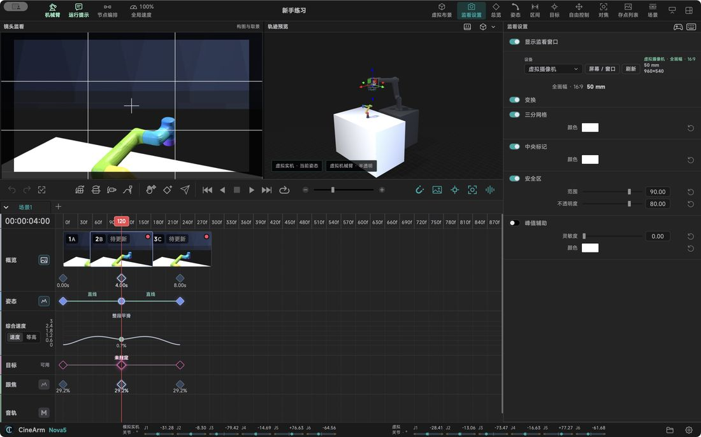

Features in detail / Monitoring and set: see the frame before you shoot
Monitoring and set: see the frame before you shoot
See the framing and the geometry before you shoot.
Any sourceCamera, capture card or virtual camera — switch per setup.
Display onlyScale, rotate and flip affect the view, never the recording.
Framing aidsThirds grid, centre mark and safe area, on demand.
Focus aidSharp edges light up, so focus is quicker to judge.
Virtual setTable, subject and focal length, so the geometry is clear in advance.
Your own modelImport your model and use it as the subject.
The set is a display environment: it does not sense a real table or prove anything about collisions.

Describes CineArm v0.1.46.